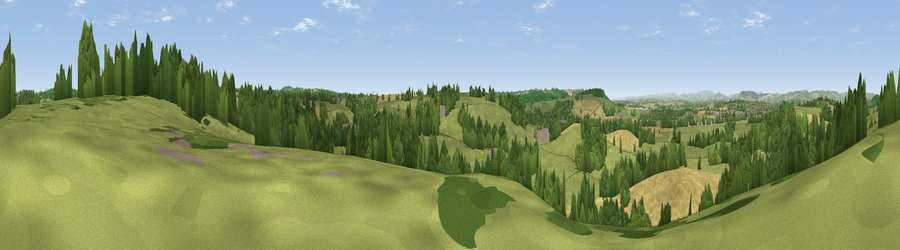

Viewpoint near Stoke Prior
#19520 in England · top 55% of its area beats it · near Stoke PriorWhere it is
The exact computed spot (SO 52175 56925). Click the marker for map links.
The view, rendered

A 360° render of this exact spot computed from the terrain model, tree cover and land cover — summer colours, afternoon light, calibrated against photographs of famous viewpoints. Real trees, hedges and buildings will differ in detail.
The panorama
Grey silhouette: terrain skyline in each direction (720 bearings, Earth curvature and refraction included). Dashed green: skyline with trees (+15 m) and buildings (+8 m) as obstacles. Blue strip: how far the ground is visible on each bearing.
Where the view opens
Wedge length = distance to the farthest visible ground on that bearing (vegetation-aware). Rings at 10, 25 and 50 km.
What fills the view
50% grassland · 24% woodland · 24% cropland · 2% built-up
Angular shares of the visible panorama (visual magnitude), not map area. Landscape diversity 0.48 (0–1 Shannon).
Key numbers
More beautiful places nearby
The staircase of upgrades: each row has a higher view potential than everything closer. Driving times are estimates from straight-line distance, calibrated against real road routing — check an actual route before setting out.
| Place | Direction | Drive | Score |
|---|---|---|---|
| Viewpoint near Stoke Prior | WSW · 2 km | ~6 min | 60.2 |
| Viewpoint near Ivington | WSW · 3 km | ~8 min | 65.1 |
| Viewpoint near Bodenham | S · 5 km | ~12 min | 71.4 |
| Viewpoint near Pencombe | ESE · 7 km | ~14 min | 72.8 |
| Viewpoint near Westhope | SW · 8 km | ~16 min | 77.0 |
| Viewpoint near Yarpole | NNW · 13 km | ~23 min | 78.1 |
| Viewpoint near Weobley | WSW · 14 km | ~26 min | 79.7 |
| Gatley Hill | NNW · 14 km | ~26 min | 82.6 |
52.20846, -2.70130 · source: screening · position refined by local search. Computed location — check access rights before visiting.